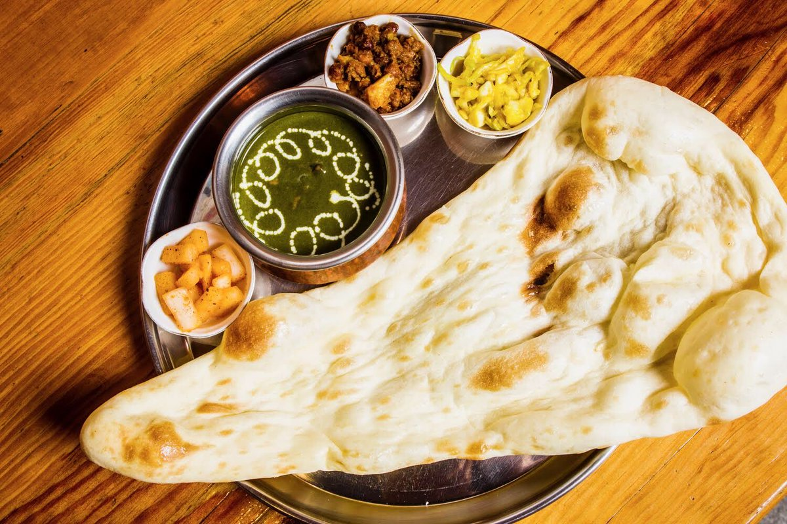

1.ネパールカーナ
ダル、タルカリは有名なネパール料理です。ここで、ダルはレンズ豆を意味し、ご飯は米とタルカリを意味します。
カレーを意味します。漬物と一緒に肉とヨーグルトもあります。
2.ネパールのモモ,br>
桃子は実際には中華料理ですが、ネパールのカトマンズでは非常に人気のネワーリ料理です。モモは、ピクルスとソースが添えられた肉または野菜とチーズの団子です。
3.ナン・ロティ

ロティはネパールのパンで、温かい油でブレスレットとして丸く調理されています。ナンも小麦の一種です
土鍋オーブンで調理したパン。これらのパンはカレーによく合います。